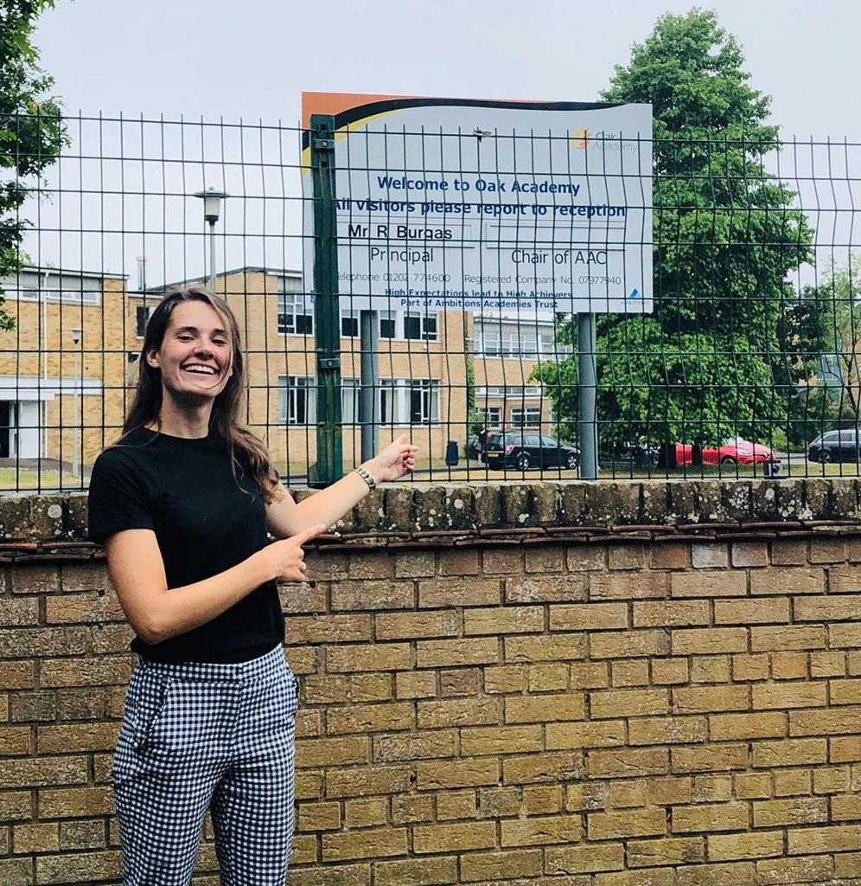
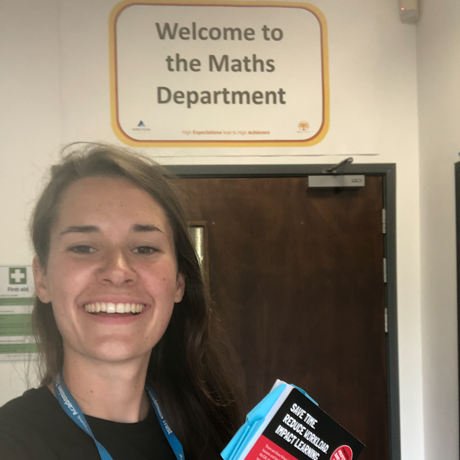

Work Experience


PA Consulting – Public Sector Analyst
2019 - Present
- Providing consultancy support to central government and higher education providers.
- Carried out programme assurance for a central government project.
- Scoped and created initial design for new grant funding schemes for low carbon technologies, including mapping current user journeys and creating a target customer journey.
Teach First – Leadership Development Graduate Programme
2017 - 2019
- Completed the Teach First Gradate programme.
- Attended conference and training days to improve my practice as a new teacher, reflecting on what makes great teaching and how to take responsibility for my own professional development.
Oak Academy – Maths and Geography Teacher
2017 - 2019
- Worked as a KS3 and KS4 Maths teacher.
- Taught KS4 Geography, inclduding a GCSE cohort. Responsible for developing department plans and introducing evidence based interventions to the subject.
- Gained valuable experience of planning, teaching and assessment.
- Developed resilience and behaviour management skills in a school with challenging behavioural and socio-economic circumstances with a high pupil premium intake.